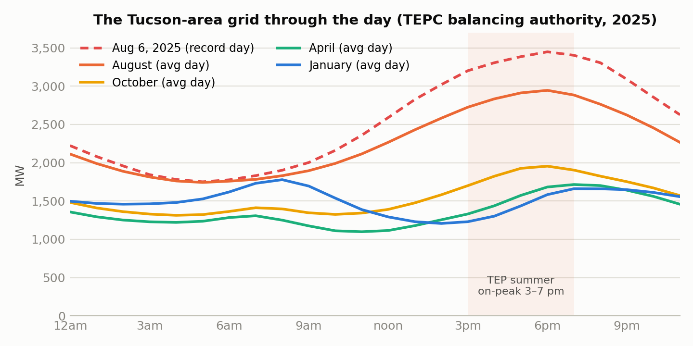
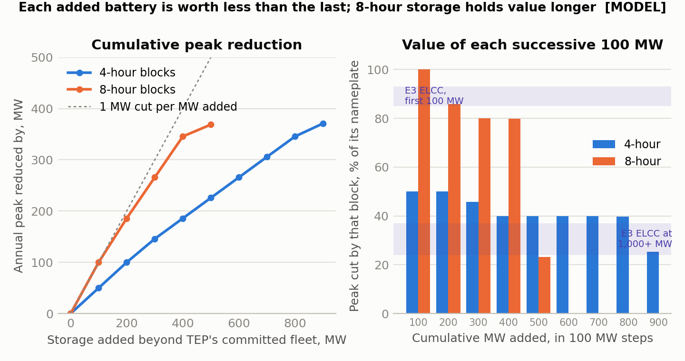
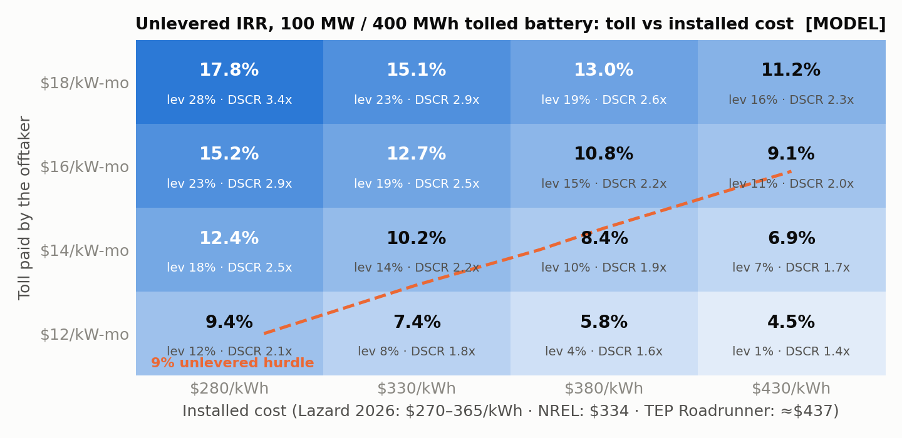

What does battery storage do to Tucson’s grid peak?
A year of hourly electricity demand for the Tucson balancing authority, from public federal data, and the question I put to it: how much of the summer peak could batteries remove, whether four-hour or eight-hour storage is the better buy, and whether a storage project would pay under realistic prices. Explore the year below, then size a battery yourself and watch the peak move.
Energy researchPublic dataScenario analysisInteractive modelBuilt with Claude Code
14,465 GWhGWh of demand over the 8,753 metered hours
2.09×peak-to-average ratio (average 1,653 MW)
56 hourshours at or above 90% of the peak (≥ 3,103 MW)
763 MWlowest hour · Mar 8, hour ending 1 pm (4.5× below the peak)
The question
A grid is built for its worst hour. Tucson’s demand more than quadruples between a mild March afternoon and a hot August evening, and only a few dozen hours a year come anywhere near the top. Batteries are the obvious tool for a peak that sharp: charge when demand is low, discharge through the evening. I wanted to know how far that goes before it stops working, whether longer-duration storage is worth its premium, and what a standalone storage project in this market would actually return.
Explore the year
Hourly demand reported to the U.S. Energy Information Administration for calendar 2025 — 8,753 of the year’s 8,760 hours — parsed and charted in your browser from a 240 KB file. Nothing here talks to a server.
Drag the slider to zoom. Demand passed 3,000 MW in 120 hours, all in summer; the floor of the year is 763 MW in March.
Table view: the year by month
Average day, by month
The grey lines are the other eleven months. The shaded band is the utility’s summer on-peak window, 3–7 pm.
Table view: average MW by hour and month
Load-duration curve
Every hour of the year ranked from highest to lowest. The orange line is the same year after the battery configured below; the left edge is what a grid has to be built for.
Table view: demand at selected ranks
Size a battery
Each day the battery flattens the top of the demand curve with the energy it holds, then refills in that day’s cheapest hours. The default is the fleet of roughly 600 MW of four-hour storage that Arizona’s utility had already committed to when I ran the study; it takes the annual peak from 3,448 MW to 2,969 MW, the same answer the study’s model gives. Switch the duration between four and eight hours to see the finding below: up to about 300 MW the two are identical, because power rather than energy is the binding constraint. Above that, eight-hour storage keeps taking a megawatt off the peak for every megawatt installed while four-hour storage falls steadily behind.
Presets:
Duration
Dispatch rule
3,448 MWMW peak as metered · Aug 6, hour ending 6 pm
— MWpeak after the battery
—MWh discharged over the year
—equivalent full cycles (MWh discharged ÷ energy rating)
—days on which the battery discharged
— hourshours at or above 90% of the as-metered peak (56 before the battery)
The ten highest days, before and after
Ranked by their as-metered peak. Click a day to see it hour by hour.
Table view
One day, hour by hour
Table view
The energy balances: discharging a MWh means drawing back 1 ÷ efficiency MWh from the grid, capped by the charger’s power rating, so the battery can never give the grid more than it took. Drag the efficiency to zero and the battery does nothing at all. Simplifications: each day stands alone and the battery starts it full; the day’s demand is known in advance; losses are one round-trip factor; no degradation, reserves or transmission limits. The “only above a target” rule shows how few days of dispatch the same peak reduction actually needs.
What I found
Each battery is worth less than the last. Beyond the committed fleet, the first 100 MW of eight-hour storage removes a full 100 MW of peak; the first 100 MW of four-hour storage removes only 50. Past roughly 900 MW of four-hour storage the batteries need to refill so much overnight that the valley rises to meet the shaved plateau and the annual peak stops falling.
Duration matters more than nameplate. Eight-hour storage holds its value for far longer, which changes what a utility should be buying.
A standalone project pencils out, narrowly. A 100 MW / 400 MWh battery earning a fixed monthly payment from the utility returns about 10% unlevered and 14% with debt under base assumptions, helped by a transferable 30% tax credit. Across the plausible range of contract prices and equipment costs the return runs from under 5% to nearly 18%, and it clears a 9% hurdle only when the equipment is cheap and the contract generous.
Home batteries only help if they are coordinated. Fleets on a fixed evening schedule empty before the true peak; coordinated dispatch keeps flattening the top of the day as the fleet grows.

The grid through the day: four months’ average days against the record day, Aug 6, 2025.

Diminishing returns: what each added block of storage does to the peak, four-hour against eight-hour. Shaded bands are published industry ranges the model was checked against.

Project returns across contract price and equipment cost, with the 9% hurdle marked.
What it shows
Research from public data: knowing which sources exist, what they can and cannot answer, and how to make them comparable.
Energy and investment economics: capacity value, duration, contract structure, tax credits and sensitivity to the assumptions that matter.
Presenting a model honestly, with its simplifications stated and a way for the reader to test the conclusions themselves.
One year of demand, not a forecast; the dispatch is an idealisation and the project economics use benchmark costs rather than quotes.